Empathize
Stakeholder map
gereed
bron: intake, sessie Lisette
Overzicht van betrokkenen, belangen en invloed op het opvolgproces. Basis voor scope en communicatie.
Details en afbeeldingen
DoelRollen en belangen ordenen en bepalen wanneer en hoe we iedereen betrekken.
InputIntake, interne documenten, overleg met Lisette.
UitkomstVisual met uitvoerders, beslissers en externen.
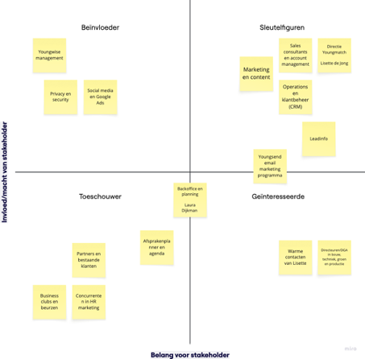
Empathize
Stakeholder invloed-belang
gereed
Indeling van stakeholders op invloed en belang. Bepaalt frequentie van afstemming en betrokkenheid.
Details en afbeeldingen
DoelBetrokkenheidsstrategie plannen per quadrant (sleutelfiguren, beïnvloeder, geïnteresseerde, toeschouwer).
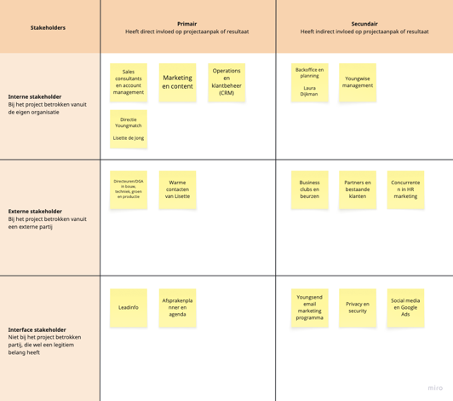
Empathize
Empathy map – MKB-eigenaar
gereed
Perspectief van de eigenaar met personeelstekort: wat ziet, hoort, denkt, zegt en doet hij.
Details en afbeeldingen
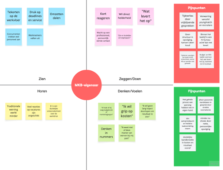
Empathize
Empathy map – HR-manager
gereed
Behoeften en drempels van de HR-manager die zoekt naar personeel en draagvlak.
Details en afbeeldingen
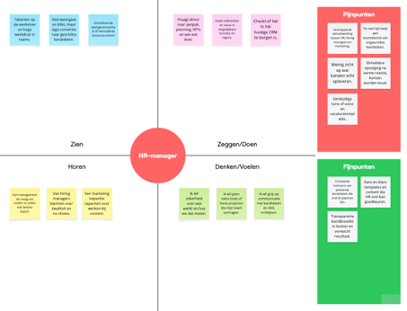
Empathize
Empathy map – Youngmatch
gereed
Interne blik: wat ziet, hoort en ervaart Youngmatch in de opvolging.
Details en afbeeldingen
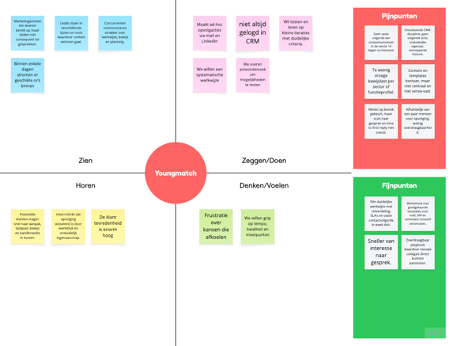
Empathize
Customer journey – huidige situatie
gereed
Route van onbekend naar ambassadeur met knelpunten per fase.
Details en afbeeldingen
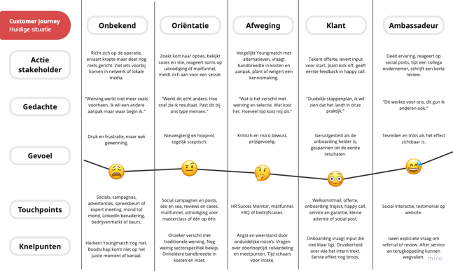
Empathize
Customer journey – nieuwe situatie
gereed
Route met blueprint-interventies en vertrouwenstriggers.
Details en afbeeldingen
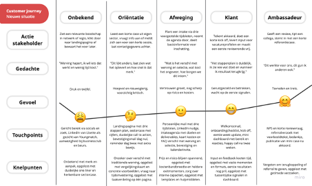
Define
Affinity mapping
gereedthema’s: timing, bewijs, kanaal, proces
Losse bevindingen clusteren tot thema’s die de ontwerpvraag aanscherpen.
Details en afbeeldingen
DoelFocus bepalen en prioriteiten kiezen op basis van patronen.
Afbeeldingen
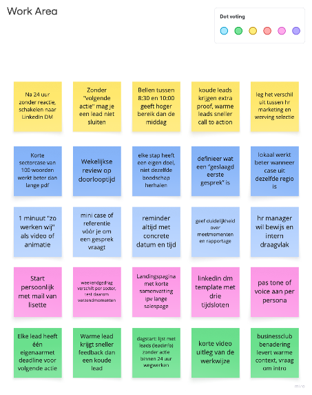
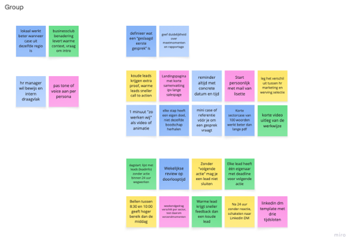
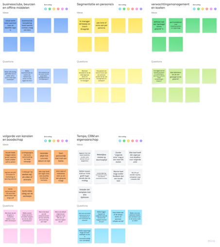
Define
Assumption mapping
gereedvervangt: impact-effort
Aannames plotten op zekerheid en impact om testprioriteiten te bepalen.
Details en afbeeldingen
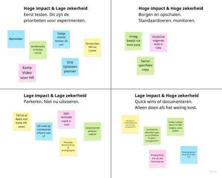
Define
How might we
gereed
Kansen formuleren zonder meteen een oplossing te kiezen.
Details en afbeeldingen
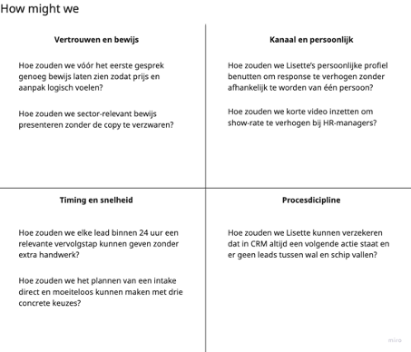
Ideate
Reverse brainstorming
gereed
Eerst bedenken hoe we het probleem erger maken; daarna oplossingen spiegelen.
Details en afbeeldingen
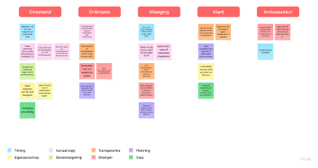
Ideate
Crazy 8s (flows en touchpoints)
gereedbron: eigen schets
Snel acht varianten schetsen voor CTA’s, planner, bevestiging en DM-opvolging.
Details en afbeeldingen
DoelIn korte tijd meerdere richtinggevende UI/flow-ideeën genereren voor week één.
Prototype
Service blueprint (klikbaar)
gereed
Klantreis met touchpoints, frontstage en backstage, systemen en vertrouwenstriggers per fase.
Details en afbeeldingen
Test
Experiment-canvas
opzetten
Kleine, meetbare tests met hypothese, aanpak, meting en besluit. (Flyer, LinkedIn, beurs).
Details en afbeeldingen
StatusWordt ingevuld met testlog en resultaten.